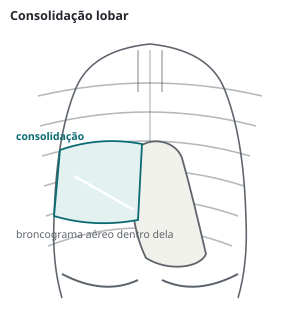

Pneumologia · 75 min · ATS 2025, ATS/IDSA 2019, SBPT 2018 · monografia
Pneumonia adquirida na comunidade
Pneumonia adquirida na comunidade no adulto imunocompetente segundo a ATS 2025, a ATS/IDSA 2019, a SBPT 2018 e a ERS/ESICM/ESCMID/ALAT 2023: diagnóstico, investigação etiológica, gravidade e local de tratamento, microbiologia, esquemas empíricos, corticoide na forma grave, estabilidade clínica e duração do antibiótico, falha terapêutica, complicações e prevenção.
Mudanças de 2019 a 2025
A diretriz da American Thoracic Society publicada em julho de 2025 (Jones e colaboradores) não substitui a ATS/IDSA de 2019 inteira. Ela reabriu quatro perguntas: ultrassom pulmonar no diagnóstico, antibiótico quando o teste para vírus respiratório vem positivo, duração do antibiótico e corticoide sistêmico. Todo o resto (exames microbiológicos, escores de gravidade, esquemas empíricos, cobertura de MRSA e Pseudomonas, anaeróbios, imagem de controle) continua sendo o texto de 2019. A prova junta as duas.
| Tema | ATS/IDSA 2019 | ATS 2025 |
|---|---|---|
| Imagem | Radiografia de tórax como confirmação | Ultrassom pulmonar é alternativa aceitável à radiografia onde houver experiência (condicional, certeza baixa) |
| Teste viral positivo | Antibiótico padrão inicial no paciente com influenza e pneumonia clínica e radiológica, internado ou ambulatorial (forte, baixa) | Estratificado: sem antibiótico no ambulatorial sem comorbidade; com antibiótico no ambulatorial com comorbidade e em todo internado (todas condicionais, muito baixa) |
| Duração | Até a estabilidade clínica e no mínimo 5 dias no total (forte, moderada) | Menos de 5 dias, mínimo de 3, no ambulatorial e no internado não grave que atingiu estabilidade (condicional, baixa); 5 dias ou mais na grave (forte, baixa) |
| Corticoide | Não usar de rotina na não grave (forte, alta) nem na grave (condicional, moderada) | Não usar na não grave (forte, baixa); sugere usar na grave (condicional, baixa), excluída a pneumonia por influenza |
A certeza é baixa em quase tudo e, ainda assim, há duas recomendações fortes: não dar corticoide à pneumonia não grave e não encurtar abaixo de cinco dias a grave. Força alta com certeza baixa quer dizer que o painel julgou o dano da alternativa maior do que a incerteza.
Definição e epidemiologia
Pneumonia adquirida na comunidade é a infecção aguda do parênquima pulmonar adquirida fora do hospital. O diagnóstico exige clínica compatível (tosse, febre, dispneia, dor pleurítica, expectoração, estertores ou sopro tubário) e imagem com infiltrado novo. Sem imagem, o que se tem é infecção respiratória baixa, e o tratamento e a duração seguem outra lógica.
O termo pneumonia associada a cuidados de saúde (HCAP) foi abandonado em 2019 (forte, moderada). Ele mandava cobrir MRSA e Pseudomonas em qualquer paciente com contato recente com o sistema de saúde, o que ampliava o espectro sem melhorar desfecho; a cobertura estendida passou a depender de fator de risco validado, discutido adiante.
No estudo EPIC (adultos internados em Chicago e Nashville, 2010 a 2012), a incidência anual foi de 24,8 por 10 mil adultos, subindo para 164 por 10 mil a partir dos 80 anos; 21% precisaram de UTI. A idade é o fator isolado que mais pesa, e por isso está em todos os escores.
Microbiologia
O que o EPIC mostrou incomoda quem aprendeu que "pneumonia é pneumococo": com cultura, antígenos urinários, sorologia e PCR em quase todos os internados, um agente foi identificado em apenas 38%. Vírus em 23%, bactéria em 11%, vírus e bactéria juntos em 3%. Os mais frequentes foram rinovírus (9%), influenza (6%) e Streptococcus pneumoniae (5%). O esquema empírico é a regra, porque na maioria dos casos nunca se saberá o agente; e o pneumococo, embora tenha encolhido na estatística (vacinação, antibiótico antes da coleta, testes pouco sensíveis), segue sendo a bactéria mais identificada e a que o esquema não pode deixar descoberta.
| Agente | Contexto que sugere | O que isso muda |
|---|---|---|
| S. pneumoniae | Início abrupto, calafrio, dor pleurítica, consolidação lobar; pneumonia que se segue à gripe | Base de qualquer esquema. Resistência à penicilina se vence com dose, não com inibidor de betalactamase |
| H. influenzae, M. catarrhalis | DPOC, tabagismo | Produzem betalactamase: aqui o clavulanato serve. A SBPT prefere azitromicina à claritromicina na DPOC pela atividade contra H. influenzae |
| Mycoplasma, Chlamydophila | Adulto jovem, tosse seca arrastada, sintomas extrapulmonares, radiografia pior que o exame | Sem parede celular (micoplasma) ou intracelulares: betalactâmico não age. Macrolídeo, doxiciclina ou quinolona |
| Legionella | Surto, viagem recente, pneumonia grave com diarreia, confusão, hiponatremia | Antígeno urinário e PCR na grave; o esquema da grave sempre cobre atípicos |
| S. aureus | Após influenza, cavitação, pneumonia necrosante, isolamento prévio de MRSA | Cobertura de MRSA só com fator de risco; no MRSA comunitário, fármaco que inibe toxina (linezolida, clindamicina) |
| Enterobactérias, Pseudomonas | Bronquiectasia, DPOC grave, internação recente com antibiótico venoso, isolamento prévio | Cobertura antipseudomonas guiada por fator de risco e cultura |
A resistência brasileira pesa na escolha. A SBPT cita um informe regional com 93% de sensibilidade à penicilina nos isolados respiratórios de pneumococo, 95% à ceftriaxona, 83% à eritromicina e só 66% a sulfametoxazol com trimetoprima; o sorotipo 19A, em ascensão no adulto, tinha sensibilidade à penicilina de apenas 50%. Para a SBPT, resistência à penicilina não deve preocupar nos casos menos graves; a mesma diretriz considera a resistência a macrolídeo alta demais para usar macrolídeo em monoterapia no paciente internado.
Diagnóstico clínico e por imagem
Nenhum achado isolado de história ou exame confirma ou afasta pneumonia. No idoso, a apresentação pode ser só confusão, queda, perda funcional ou descompensação de doença de base, com pouca febre e pouca tosse, e é justamente o grupo de maior mortalidade. Por isso o diagnóstico é clínico e radiológico, e a imagem é obrigatória antes de chamar de pneumonia.


A radiografia tem limites conhecidos: pode ser normal nas primeiras horas, no desidratado e no neutropênico, e perde consolidação retrocardíaca e pequena. A tomografia resolve a dúvida quando a radiografia é negativa e a suspeita é alta, mas não é rotina. O ultrassom pulmonar ganhou lugar formal em 2025. Na revisão da diretriz, a sensibilidade mediana foi de 95% para o ultrassom contra 70% para a radiografia; a especificidade mediana, de 75% contra 55%, com faixas muito largas entre os estudos. Os achados são consolidação subpleural com aspecto de tecido e broncograma aéreo dinâmico, linhas B focais e derrame associado.
| Recomendação | Força · certeza |
|---|---|
| Ultrassom pulmonar como alternativa diagnóstica aceitável à radiografia de tórax, em centros com experiência apropriada (ATS 2025) | condicionalbaixa |
| Iniciar antibiótico empírico no adulto com pneumonia suspeita clinicamente e confirmada por imagem, qualquer que seja a procalcitonina inicial (ATS/IDSA 2019) | fortemoderada |
A procalcitonina sobe mais em infecção bacteriana do que viral, mas a diretriz de 2025 lembra que sensibilidade e especificidade para separar as duas ficam, na melhor das hipóteses, em torno de 75 a 80%. Um valor baixo não autoriza deixar sem antibiótico uma pneumonia confirmada. Onde ela ajuda é no fim do tratamento, não no começo; a ERS/ESICM sugere usá-la para encurtar o antibiótico na pneumonia grave, como se verá.
Investigação etiológica
A regra de 2019 é proporcional: nada de rotina no ambulatório, pouco na enfermaria, muito na grave, e sempre que o esquema for sair do padrão. O exame só vale se puder mudar o antibiótico: no grave e em quem recebe cobertura de MRSA ou Pseudomonas, é a cultura que permite descalonar.
| Recomendação (ATS/IDSA 2019, salvo indicação) | Força · certeza |
|---|---|
| Gram e cultura de escarro e hemoculturas não de rotina no ambulatório | forte, contramuito baixa |
| Hemoculturas não de rotina no internado não grave | condicional, contramuito baixa |
| Gram, cultura de secreção respiratória e hemoculturas antes do antibiótico na pneumonia grave (sobretudo intubado) e em quem recebe cobertura empírica de MRSA ou Pseudomonas | fortemuito baixa |
| Mesmas coletas em quem já teve MRSA ou Pseudomonas, ou foi internado com antibiótico venoso nos últimos 90 dias | condicionalmuito baixa |
| Antígeno urinário de pneumococo não de rotina, exceto na pneumonia grave | condicionalbaixa |
| Antígeno urinário de Legionella só em surto, viagem recente ou pneumonia grave; na grave, também cultura ou PCR para Legionella em secreção respiratória baixa | condicionalbaixa |
| Com influenza circulando, testar por teste molecular rápido, preferido ao teste de antígeno | fortemoderada |
| Painel molecular (PCR multiplex) em amostra respiratória baixa na pneumonia grave sempre que se prescreve ou se cogita antibiótico fora do padrão (ERS/ESICM/ESCMID/ALAT 2023) | condicionalmuito baixa |
O antígeno urinário de Legionella não reconhece todas as espécies e sorogrupos, daí a cultura ou PCR junto na forma grave. O PCR nasal para MRSA vale sobretudo negativo: permite suspender ou nem começar a cobertura de MRSA.
Gravidade e local de tratamento
A diretriz americana recomenda, além do julgamento clínico, uma regra de predição validada, de preferência o PSI (forte, moderada) sobre o CURB-65 (condicional, baixa). O PSI foi construído para achar com segurança os pacientes de baixo risco; o CURB-65 é mais simples e é o que a SBPT e a prova brasileira mais usam. Nenhum dos dois foi feito para decidir UTI.
| CURB-65: 1 ponto por item | Critério |
|---|---|
| Confusão | Confusão mental nova |
| Ureia | > 7 mmol/L no escore original; a SBPT usa ureia > 50 mg/dL |
| FR | Frequência respiratória ≥ 30 irpm |
| Blood pressure | Sistólica < 90 mmHg ou diastólica ≤ 60 mmHg |
| 65 | Idade ≥ 65 anos |
O PSI soma 20 variáveis: idade em anos (menos 10 na mulher), procedência de instituição de longa permanência (+10), neoplasia (+30), hepatopatia (+20), insuficiência cardíaca, doença cerebrovascular e doença renal (+10 cada); alteração do estado mental, frequência respiratória ≥ 30 e sistólica < 90 (+20 cada), temperatura < 35 °C ou > 40 °C (+15), frequência cardíaca ≥ 125 (+10); pH < 7,35 (+30), ureia elevada e sódio < 130 (+20 cada), glicose > 250 mg/dL, hematócrito < 30%, PaO₂ < 60 mmHg e derrame pleural (+10 cada). Classes I e II (até 70 pontos, mortalidade de 0,1 a 0,6%): casa; III (71 a 90, 2,8%): casa ou internação breve; IV (91 a 130, 8,2%) e V (> 130, 29,2%): internação. O jovem hipoxêmico pontua pouco.
Critérios de pneumonia grave e indicação de UTI
| Recomendação (ATS/IDSA 2019) | Força · certeza |
|---|---|
| Internação direta em UTI no paciente com hipotensão que exige vasopressor ou insuficiência respiratória que exige ventilação mecânica | fortebaixa |
| Sem vasopressor nem ventilação, usar os critérios menores IDSA/ATS de 2007 junto com o julgamento clínico para decidir o nível de cuidado | condicionalbaixa |
| Pneumonia grave: 1 critério maior ou 3 menores | Critérios |
|---|---|
| Maiores | Choque séptico com necessidade de vasopressor · insuficiência respiratória com necessidade de ventilação mecânica |
| Menores | Frequência respiratória ≥ 30 irpm · PaO₂/FiO₂ ≤ 250 · infiltrado multilobar · confusão ou desorientação · uremia (ureia nitrogenada ≥ 20 mg/dL, cerca de 43 mg/dL de ureia) · leucopenia < 4.000/µL por infecção · plaquetas < 100.000/µL · hipotermia central < 36 °C · hipotensão que exige reposição volêmica agressiva |
A definição de grave muda três coisas: o esquema (betalactâmico sempre combinado), a duração (5 dias ou mais) e o corticoide (sugerido). A SBPT cita ainda escores que predizem necessidade de suporte, e não morte: no SMART-COP, mais de 3 pontos identificou 92% de quem precisou de ventilação ou vasopressor; no SCAP, 10 pontos ou mais prediz as mesmas necessidades.
flowchart TD A["Pneumonia confirmada
clínica + imagem"] --> B{"Critério maior?
vasopressor ou
ventilação mecânica"} B -->|"sim"| C["UTI direto"] B -->|"não"| D{"3 ou mais critérios
menores?"} D -->|"sim"| E["UTI ou unidade
intermediária"] D -->|"não"| F{"PSI I–II ou
CURB-65 0–1?"} F -->|"não"| G["Internar
enfermaria"] F -->|"sim"| H{"Hipoxemia, sem via oral,
comorbidade descompensada
ou sem suporte social?"} H -->|"sim"| G H -->|"não"| I["Ambulatório
com retorno programado"]
Onde tratar?
CURB-65 zero e PSI na classe I pela idade, mas hipoxemia interna. O escore quase não enxerga a oxigenação (no PSI a hipoxemia vale 10 pontos, e o CURB-65 nem a inclui); o julgamento clínico que a diretriz exige junto com o escore existe para este caso. Enfermaria, oxigênio, esquema de internado não grave.Esquemas empíricos
O esquema sai de duas variáveis: onde o paciente é tratado (que embute a gravidade) e quem ele é (comorbidade, risco de resistência). A diretriz americana lista as opções sem ordem de preferência.
Ambulatório
| Recomendação (ATS/IDSA 2019) | Força · certeza |
|---|---|
| Sem comorbidade e sem fator de risco para MRSA ou Pseudomonas: amoxicilina 1 g a cada 8 h | fortemoderada |
| Ou doxiciclina 100 mg a cada 12 h | condicionalbaixa |
| Ou macrolídeo (azitromicina 500 mg no 1º dia e 250 mg/dia; claritromicina 500 mg a cada 12 h ou 1 g/dia de liberação prolongada) só onde a resistência do pneumococo a macrolídeo for < 25% | condicionalmoderada |
| Com comorbidade: amoxicilina com clavulanato (500/125 mg a cada 8 h, 875/125 mg ou 2.000/125 mg a cada 12 h) ou cefalosporina (cefpodoxima 200 mg ou cefuroxima 500 mg a cada 12 h) associada a macrolídeo | fortemoderada |
| Ou a mesma base associada a doxiciclina | condicionalbaixa |
| Ou quinolona respiratória em monoterapia (levofloxacino 750 mg/dia, moxifloxacino 400 mg/dia, gemifloxacino 320 mg/dia) | fortemoderada |
As comorbidades que mudam o esquema são as da lista de 2019: cardiopatia, pneumopatia, hepatopatia ou nefropatia crônicas, diabetes, etilismo, neoplasia e asplenia. A SBPT, para o paciente sem comorbidade, sem antibiótico recente e sem fator de risco, propõe monoterapia com amoxicilina, amoxicilina com clavulanato ou macrolídeo (a resistência à eritromicina entre 5 e 49 anos foi de 16,9% num levantamento de 2014, abaixo do corte de 25%); com fator de risco ou antibiótico recente, betalactâmico com macrolídeo; a quinolona fica para alergia.
Internação
| Recomendação | Força · certeza |
|---|---|
| Enfermaria, sem risco de MRSA ou Pseudomonas: betalactâmico (ampicilina com sulbactam 1,5 a 3 g a cada 6 h, cefotaxima 1 a 2 g a cada 8 h, ceftriaxona 1 a 2 g/dia ou ceftarolina 600 mg a cada 12 h) com macrolídeo (azitromicina 500 mg/dia ou claritromicina 500 mg a cada 12 h) (2019) | fortealta |
| Ou quinolona respiratória em monoterapia (levofloxacino 750 mg/dia ou moxifloxacino 400 mg/dia) (2019) | fortealta |
| Contraindicação a macrolídeo e a quinolona: betalactâmico com doxiciclina 100 mg a cada 12 h (2019) | condicionalbaixa |
| Pneumonia grave: betalactâmico com macrolídeo (2019) | fortemoderada |
| Pneumonia grave: betalactâmico com quinolona respiratória (2019) | fortebaixa |
| Pneumonia grave: acrescentar ao betalactâmico macrolídeo, não quinolona (ERS/ESICM/ESCMID/ALAT 2023) | condicionalmuito baixa |
Na forma grave, a monoterapia sai de cena. O betalactâmico isolado deixa os atípicos descobertos, Legionella inclusive, justamente no grupo em que errar o agente custa mais; a quinolona isolada não foi estudada o suficiente na forma grave, e a própria diretriz de 2019 pede esses estudos. A preferência europeia pelo macrolídeo vem de estudos observacionais: mortalidade de 19,4% com macrolídeo contra 26,8% com quinolona, somados ao betalactâmico. A explicação proposta é o efeito imunomodulador do macrolídeo, independente da sensibilidade do agente. A ERS/ESICM considera razoável manter o macrolídeo por 3 a 5 dias. A SBPT segue o mesmo desenho e lembra que macrolídeo isolado não serve para o internado.
flowchart TD
A{"Onde tratar?"} -->|"casa, sem
comorbidade"| B["Amoxicilina 1 g 8/8 h
ou doxiciclina
macrolídeo só se
resistência < 25%"]
A -->|"casa, com
comorbidade"| C["Amoxi-clavulanato
ou cefalosporina oral
+ macrolídeo
ou doxiciclina
ou quinolona isolada"]
A -->|"internação"| D{"Pneumonia
grave?"}
D -->|"não"| E["β-lactâmico
+ macrolídeo
ou quinolona
isolada"]
D -->|"sim"| F["β-lactâmico
+ macrolídeo
ou + quinolona"]
E --> G["Risco de MRSA ou
Pseudomonas?
Fluxograma 3"]
F --> G
MRSA e Pseudomonas
A diretriz de 2019 trocou a lista de "contato com o sistema de saúde" por dois fatores de risco que resistiram à validação: isolamento respiratório prévio do agente e internação recente com antibiótico venoso nos últimos 90 dias. Cobrir MRSA ou Pseudomonas só se justifica com fator de risco validado localmente (forte, moderada); onde não houver dado local, cobre-se enquanto a cultura não chega e descalona-se se ela vier negativa (forte, baixa).
| Situação | Não grave | Grave |
|---|---|---|
| Isolamento respiratório prévio de MRSA | Acrescentar cobertura de MRSA; culturas e PCR nasal para descalonar ou confirmar | |
| Isolamento respiratório prévio de Pseudomonas | Acrescentar cobertura de Pseudomonas; culturas para descalonar ou confirmar | |
| Internação com antibiótico venoso em 90 dias e risco local validado | Colher culturas e só cobrir se positivas; para MRSA, PCR nasal rápido negativo dispensa a cobertura | Cobrir já; culturas e PCR nasal para descalonar |
- MRSA: vancomicina 15 mg/kg a cada 12 h, ajustada por nível sérico e pela função renal (CKD-EPI 2021); ou linezolida 600 mg a cada 12 h.
- Pseudomonas: piperacilina com tazobactam 4,5 g a cada 6 h, cefepima 2 g a cada 8 h, ceftazidima 2 g a cada 8 h, meropeném 1 g a cada 8 h, imipeném 500 mg a cada 6 h ou aztreonam 2 g a cada 8 h.
- Nenhum desses esquemas cobre enterobactéria produtora de betalactamase de espectro estendido; essa cobertura só entra por dado do paciente ou do hospital.
- Duração quando o agente se confirma: 7 dias, em linha com a diretriz de pneumonia hospitalar.
flowchart TD
A{"Isolamento respiratório
prévio de MRSA
ou Pseudomonas?"} -->|"sim"| B["Cobrir o agente
culturas · PCR nasal
para MRSA"]
A -->|"não"| C{"Internação com
antibiótico venoso
em 90 dias + risco local?"}
C -->|"não"| D["Esquema padrão"]
C -->|"sim"| E{"Pneumonia
grave?"}
E -->|"sim"| B
E -->|"não"| F["Colher culturas
cobrir só se
positivas"]
B --> G{"Culturas e PCR
negativas em 48 h
e melhora?"}
G -->|"sim"| H["Suspender a
cobertura estendida"]
G -->|"não"| I["Tratar o agente
7 dias"]
Vírus respiratório detectado
A diretriz de 2019 mandava dar antibiótico padrão a todo paciente com influenza e pneumonia clínica e radiológica (forte, baixa). A de 2025 estratificou pelo risco de coinfecção bacteriana e pelo custo de errar:
| Recomendação (ATS 2025), teste positivo para vírus respiratório | Força · certeza |
|---|---|
| Ambulatorial sem comorbidade: não prescrever antibiótico empírico | condicional, contramuito baixa |
| Ambulatorial com comorbidade: prescrever, pela preocupação com coinfecção bacteriana | condicionalmuito baixa |
| Internado com pneumonia não grave: prescrever | condicionalmuito baixa |
| Internado com pneumonia grave: prescrever | condicionalmuito baixa |
O vírus detectado não exclui bactéria (no EPIC, 3% tinham os dois), e quanto mais frágil o paciente, mais caro é deixar coinfecção sem tratamento. A pneumonia bacteriana secundária à influenza é classicamente pneumocócica ou estafilocócica, inclusive por MRSA, e aparece como piora depois de alguns dias de melhora.
| Antiviral na influenza | Força · certeza |
|---|---|
| Oseltamivir no internado com pneumonia e influenza confirmada, independentemente do tempo de doença (ATS/IDSA 2019) | fortemoderada |
| Antiviral no ambulatorial com pneumonia e influenza confirmada, independentemente do tempo de doença (ATS/IDSA 2019) | condicionalbaixa |
| Pneumonia grave: oseltamivir se influenza confirmada por PCR; sem PCR disponível, empírico durante a estação de influenza (ERS/ESICM/ESCMID/ALAT 2023) | condicionalmuito baixa |
- 75 mg a cada 12 h por 5 dias no adulto (CDC); curso mais longo pode ser considerado no internado muito grave.
- Função renal reduzida (filtração estimada pela CKD-EPI 2021): 30 mg a cada 12 h entre 30 e 60 mL/min; 30 mg/dia entre 10 e 30 mL/min; na hemodiálise, 30 mg após cada sessão.
O benefício do antiviral é maior quando ele começa nas primeiras 48 horas de sintoma, mas no internado os estudos observacionais sustentam começar depois disso, e a diretriz manda tratar mesmo fora da janela. O inverso também foi escrito em 2019: com influenza confirmada, nenhuma evidência de bactéria (procalcitonina baixa inclusive) e estabilidade precoce, pode-se considerar suspender o antibiótico em 48 a 72 horas.
Pneumonia aspirativa
O rótulo "aspirativa" costuma disparar metronidazol ou clindamicina por reflexo. As duas diretrizes internacionais dizem o contrário. Os estudos dos anos 1970 que acharam anaeróbios em profusão colhiam por punção transtraqueal e tarde na evolução; os estudos recentes de aspiração em internados mostram anaeróbios pouco frequentes. Somam-se a isso a colite por Clostridioides difficile, associada sobretudo à clindamicina, e o fato de os esquemas padrão já terem alguma atividade anaeróbia.
| Recomendação | Força · certeza |
|---|---|
| Não acrescentar cobertura anaeróbia de rotina na suspeita de pneumonia aspirativa, salvo suspeita de abscesso pulmonar ou empiema (ATS/IDSA 2019) | condicional, contramuito baixa |
| Pneumonia grave com fator de risco para aspiração: esquema padrão, sem terapia dirigida a anaeróbios (ERS/ESICM/ESCMID/ALAT 2023) | boa prática |
Duas distinções decidem a questão. Pneumonite química por aspiração de conteúdo gástrico (vômito presenciado, convulsão, sedação) produz infiltrado e hipoxemia em horas, e muitos pacientes melhoram em 24 a 48 horas só com suporte, sem antibiótico; é inflamação, não infecção. E a aspiração com abscesso, pneumonia necrosante, empiema ou doença periodontal grave é o lugar da cobertura anaeróbia. Para esse grupo a SBPT lista betalactâmico com inibidor de betalactamase, clindamicina ou moxifloxacino, por 7 a 21 dias.
Corticoide na pneumonia grave
É a maior virada entre 2019 e 2025. Em 2019, com ensaios heterogêneos, a diretriz sugeria não usar corticoide de rotina nem na pneumonia grave (condicional, moderada). Depois vieram o CAPE COD e novas metanálises, e as três diretrizes que importam passaram a indicar o corticoide na forma grave, com recortes diferentes.
| Recomendação | Força · certeza |
|---|---|
| Pneumonia não grave internada: não administrar corticoide sistêmico (ATS 2025) | forte, contrabaixa |
| Pneumonia grave internada: corticoide sistêmico, excluída a pneumonia por influenza (ATS 2025) | condicionalbaixa |
| Pneumonia grave em paciente hospitalizado: corticoide (SCCM 2024, atualização focada) | forte |
| Pneumonia grave com choque: corticoide; não se aplica a pneumonia viral (influenza, SARS, MERS), diabetes descontrolado nem a quem já usa corticoide por outro motivo (ERS/ESICM/ESCMID/ALAT 2023) | condicionalbaixa |
Na pneumonia grave, boa parte do dano vem da resposta inflamatória desproporcional; o corticoide reduz a progressão para insuficiência respiratória e choque, que é o que o CAPE COD mediu. Na leve sobram hiperglicemia e reinternação. A exclusão da influenza vem de uma metanálise de estudos retrospectivos, em sua maioria pequenos, que sugeriu mortalidade maior com corticoide, talvez porque a defesa contra o vírus depende mais da imunidade inata; a ATS/IDSA de 2019 já sugeria não usar corticoide de rotina na pneumonia grave por influenza (condicional, baixa). Aspergilose também contraindica. Nada disso impede o corticoide indicado pela doença de base, como na exacerbação de DPOC ou de asma.
- Hidrocortisona 200 mg/dia IV (esquema do CAPE COD): 4 dias se houver melhora precoce, senão 7, e depois redução até completar 8 ou 14 dias.
- Metilprednisolona 0,5 mg/kg a cada 12 h por 5 dias: a opção que a ERS/ESICM considera razoável.
- A ATS 2025 não fixa molécula, dose nem duração.
- No choque séptico, vale a diretriz de sepse: hidrocortisona 200 mg/dia.
Corticoide?
Sim. Pneumonia grave (critério de insuficiência respiratória com hipoxemia importante), fora de choque e sem influenza: é a população do CAPE COD. Hidrocortisona 200 mg/dia, reavaliando a melhora no 4º dia. Se o PCR fosse positivo para influenza, a recomendação da ATS 2025 não se aplicaria.Estabilidade clínica
São sete itens clínicos, todos de beira de leito: os que a diretriz de 2019 descreve (sinais vitais, capacidade de comer e estado mental), com cortes que vêm do estudo de Halm (1998). Nenhum deles é exame de imagem ou marcador inflamatório, e é exatamente essa a mudança de cultura: o que autoriza encerrar o antibiótico é o paciente, não a proteína C reativa nem a radiografia. A ATS/IDSA de 2019 manda guiar a duração por uma medida validada de estabilidade (forte, moderada), e a ATS 2025 manda avaliá-la todo dia. O mesmo conjunto decide a troca para a via oral e a alta.
Duração do antibiótico
| Recomendação (ATS 2025), paciente que atingiu estabilidade | Força · certeza |
|---|---|
| Ambulatorial: menos de 5 dias, com mínimo de 3 | condicionalbaixa |
| Internado, pneumonia não grave: menos de 5 dias, com mínimo de 3 | condicionalbaixa |
| Internado, pneumonia grave: 5 dias ou mais | fortebaixa |
O ensaio que ancorou a mudança é o PTC (2021): internados em enfermaria, estáveis no 3º dia de betalactâmico, randomizados para mais 5 dias de amoxicilina com clavulanato ou placebo. A cura no 15º dia foi de 77% com placebo e 68% com antibiótico, dentro da margem de não inferioridade, com menos efeito adverso digestivo no grupo curto. Note a assimetria deliberada: a gravidade da apresentação inicial define o piso, não a velocidade da melhora. Paciente grave que melhorou no quarto dia ainda completa pelo menos cinco. Ficam fora da regra curta o MRSA e a Pseudomonas confirmados (7 dias), o empiema, o abscesso, a bacteremia por S. aureus e a infecção extrapulmonar, que têm duração própria. A SBPT de 2018 ainda fala em 5 dias no ambulatório e 7 a 10 na moderada a grave; é o ponto em que ela ficou para trás.
Falha terapêutica
Não responder é não atingir estabilidade no tempo esperado ou piorar: febre e taquipneia que não cedem nos primeiros dias, insuficiência respiratória nova, choque, progressão radiológica. Antes de trocar o antibiótico, a pergunta é qual das quatro famílias explica a falha:
- Agente não coberto: MRSA, Pseudomonas, Legionella sem macrolídeo ou quinolona, tuberculose, fungo, Pneumocystis no imunossuprimido não reconhecido.
- Complicação: derrame complicado ou empiema, abscesso, bacteremia com foco metastático (endocardite, meningite, artrite).
- Diagnóstico errado: insuficiência cardíaca, embolia, neoplasia, pneumonia em organização, vasculite, hemorragia alveolar, pneumonite por fármaco.
- Problema de fármaco ou de hospedeiro: dose ou via inadequada, absorção, interação; infecção hospitalar nova.
A investigação segue a lista: culturas de novo, ultrassom pleural e toracocentese, tomografia, e broncoscopia com lavado quando a dúvida é agente incomum ou diagnóstico alternativo.
Complicações
Derrame parapneumônico: todo derrame em paciente febril deve ser puncionado. pH abaixo de 7,2, glicose baixa, loculação ou Gram positivo indicam drenagem; pus franco é empiema e drena sem esperar bioquímica (detalhes no capítulo de derrame pleural). Abscesso e pneumonia necrosante pedem cobertura anaeróbia e curso longo. Sepse e choque seguem a diretriz de sepse. Eventos cardiovasculares (infarto, arritmia, insuficiência cardíaca) acompanham a pneumonia do idoso e do cardiopata: troponina e eletrocardiograma na piora sem explicação pulmonar.
Prevenção
Vacina de influenza anual, com a de alta dose como preferencial para idosos na SBIm. Pneumocócica: desde setembro de 2026 o SUS aplica a conjugada 20-valente em dose única a partir dos 85 anos, e entre 60 e 84 anos em acamados, institucionalizados e condições clínicas especiais; a SBIm (2026-2027) recomenda VPC20 em dose única ou VPC15 ou VPC13 seguida de VPP23. Vírus sincicial respiratório: a SBIm recomenda acima dos 70 anos e dos 18 aos 69 com condição de risco. Cessação do tabagismo e controle do etilismo completam o plano de alta.
Erros frequentes
- Tratar em casa o hipoxêmico de escore baixo.
- Macrolídeo isolado no internado ou onde a resistência passa de 25%.
- Quinolona de rotina no ambulatório saudável; ciprofloxacino para pneumonia.
- Betalactâmico isolado na pneumonia grave. Sempre com macrolídeo (preferido) ou quinolona.
- Cobrir MRSA e Pseudomonas sem colher cultura, ou manter a cobertura com cultura e PCR nasal negativos em 48 horas.
- Metronidazol ou clindamicina em toda aspiração. Só com abscesso, necrose ou empiema.
- Suspender antibiótico por procalcitonina baixa na chegada. A pneumonia confirmada é tratada.
- Corticoide na pneumonia não grave (forte contra) ou na grave por influenza.
- Manter 10 ou 14 dias "por hábito" em paciente estável desde o terceiro dia; guiar a duração pela radiografia ou pela proteína C reativa.
- Encerrar no quarto dia uma pneumonia que se apresentou grave, só porque melhorou.